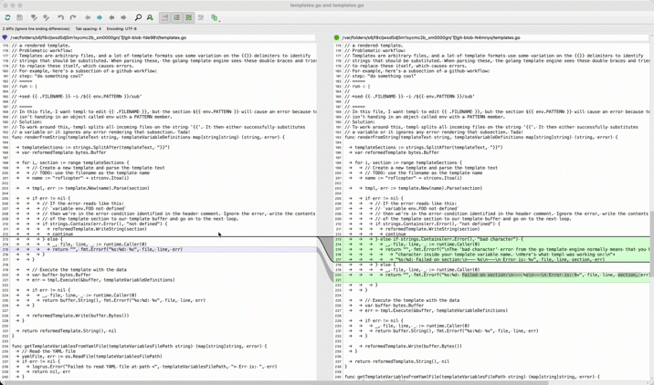

wrapping p4merge and p4diff for the cli
I love using p4merge and p4diff with git as my visual debugger; the scrolling
presentation is just a little smoother than kdiff, Apple's merge tool or the
stuff
integrated into the various IDEs.
Here's side-by-side scrolling:
Here's dual-file editing:
![The same document displayed twice in p4merge, in a left and right pane. I click an edit button which is
colour coded to be specific to the right pane and a third pane opens on the bottom, and it's editable. As I add
update the text in the editor, the right pane also receives the update and p4merge highlights the difference.
Then I click a separate edit button that is colour-coded to be specific to the left pane, which opens in the same
editor pane and as I update it the left pane is live-edited to show the difference. The difference between both
documents that I introduced are saved to the file system.](images/p4merge-file-editing.gif)
The official docs tell you that if you want to integrate it with the command line then you have to write that integration yourself. It's annoying, but I wrote a bad version several years ago. I've since tweaked it a couple of times. Here's the two wrapper scripts I use.
p4diff
#!/bin/sh
[ $# -eq 7 ] && /usr/local/bin/p4merge "$2" "$PWD/$5"
p4merge
#!/bin/sh
/Applications/p4merge.app/Contents/MacOS/p4merge $*